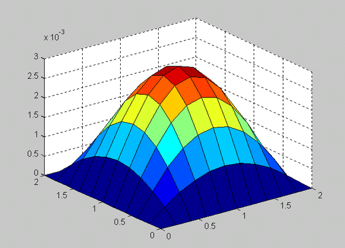

Introducción histórica de los métodos numéricos

La historia de los métodos numéricos es la colección de acontecimientos matemáticos en los que se resuelven problemas sin el uso de la matemática analítica (Finkelshtein, s.f.).
Algunos de los métodos más utilizados en la actualidad fueron creados mucho antes de la invención de la computadora; su aplicación era extenuante y complicada porque cada iteración requería de una diversidad de operaciones aritméticas que se realizaban por grupos enteros de calculistas, evidentemente, de forma manual.
Todos los enterados en la materia estarán de acuerdo en que una computadora realiza una gran cantidad de operaciones en un intervalo muy pequeño; las súper computadoras lo hacen, pero en forma paralela. Esta capacidad es la que ha dado un sentido de aplicación a los métodos numéricos. Por lo anterior, la historia de los métodos numéricos es paralela, al menos desde la mitad del siglo XIX, a la historia de la computación. Las contribuciones más actuales radican en la creación de software que minimiza los errores y mejora las aproximaciones de los resultados.
Esta es una relación de hechos que han marcado la historia de los métodos numéricos y se recomienda al lector, de acuerdo a su interés, profundizar en el tópico que le resulte de su interés; en particular, la obra Los Innovadores (Isaac son, 2014) de Walter Isaac son ofrece un panorama muy amplio al respecto.
• 1650 a.C. Se crean los Papiros de Rhyad en los que se escribe un método para resolver expresiones matemáticas sin algebra.
• 250 a.C. Euclides crea el Método de Exhausción, que consiste en aproximar figuras geométricas (triángulos, cuadrados, pentágonos, etc.) consecutivamente dentro de un círculo para obtener una aproximación a π.
• 1623. John Napier inventa los huesos de Napier, que son arreglos prácticos de logaritmos en tablas.
• 1768. Euler crea soluciones aproximadas a ecuaciones diferenciales con el principio de la integración numérica. Jacob Stirling y Brook Taylor presentan el Cálculo de diferencias finitas.
• 1822. Charles Babbage inventa la Máquina diferencial.
• 1843. Ada, condesa de Lovelace, publica sus notas sobre la máquina analítica de Charles Babbage.
• 1890. (IBM) Tabula el censo estadounidense empleando las máquinas de tarjetas perforadas de Herman Hollerith.
• 1931. Vannebar Bush diseña el analizador diferencial, un computador analógico electromecánico. En 1945 publicar ‘a el artículo Como podremos pensar en el que describe la computadora personal.
• 1937. Alan Turing publica Sobre los números computables, en el que describe un computador universal. En este mismo año, Howard Aiken propone la construcción de un gran computador y descubre partes de la máquina diferencial de Babbage en Harvard; también John Vincent Atanasoff conceptualiza el computador electrónico la cual completó en 1939
• 1938. William Hewlett y David Packard crean su impresa en Palo Alto, California, Estados Unidos.
• 1939.Turing comienza a descifrar los códigos secretos alemanes.
• 1944.John Von Newmann redacta el primer informe sobre EDVAC. En distintas universidades de Estados Unidos se desarrollan proyectos sobre computadoras cuya aplicación (secreta) ser ‘a apoyar a la milicia en cálculos balísticos (ecuaciones diferenciales).
• 1950. Turing crea su famosa prueba sobre la inteligencia artificial; se suicidar ‘a en 1954. J.H.Wilkinson acudió al Laboratorio Nacional de Física de Reino Unido para construir una versión más simple de la máquina de Turing; construyó la ACE (Automatic Computing Engine) para resolver cálculos con matrices.
• 1953. John W. Backus, empleado de IBM, desarrolla FORTRAN (Formulae Translating) como una alternativa al uso del lenguaje ensamblador; se usó por primera vez en una IBM 704.
• 1958. Se anuncia la creación de la Agencia de Proyectos de Investigación Avanzada (ARPA).
• 1962. Doug Engelbart publica Aumentar el intelecto humano; en 1963, junto con Bill English inventar ‘a el ratón.
• 1968. Noyce y Moore fundan INTEL.
• 1969. Misión Apolo 11. Katherine Johnson calcula la trayectoria del cohete Mercurio. Dorothy Vaughan se convierte en la supervisora de IBM dentro de la NASA. Mary Jackson es la primera ingeniera aeroespacial en Estados Unidos. Margaret Hamilton escribe el código del programa que control ‘o la nave. Todas ellas tuvieron una participación fundamental para que la misión fuera un ´éxito.
• 1970. Investigadores visitantes en el Argone National Laboratory de Estados Unidos traducen códigos de ALGOL para obtener eigenvalores planteados por Wilkinson para incluirlos en FORTRAN. De esta labor nace EISPACK en 1976 y posteriormente LINPACK en 1976.
• 1973 Vint Cerf y Bob Kahn completan los protocolos TCP/IP.
• 1975. Bill Gates y Paul Allen desarrollan el lenguaje de programación BASIC fundan Microsoft. Steve Jobs y Steve Wosniak lanzan el Apple I.
• 1983. Richard Stallman empieza a desarrollar el proyecto GNU.
• 1984. Cleve Moler, a partir de EISPACK y LINPACK crea MATLAB; funda la empresa
• MathWorks.
• 1991. Linus Torvalds lanza la primera versión de Linux. Tim Berbers-Lee an uncia la World
• Wide Web.
• 1993. Marc Andreessen libera el navegador Mosaic.
• 1997. Deep Blue, de IBM, derrota a Guari Kasparov en una partida de ajedrez.
• 1998. Larry Page y Sergu´ei Brin liberan Google.